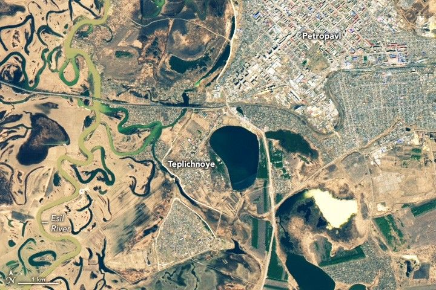

Spring Flooding in Kazakhstan
For the second consecutive year, rapid snowmelt and spring rains caused widespread flooding along rivers in northern Kazakhstan in 2025. Floodwater inundated homes and displaced hundreds of people from several riverside communities.
The images above show flooding along the Esil River on April 24, 2025 (right), after floodwaters arrived, and on April 9, 2025 (left), when water levels were lower. The images were captured by the OLI (Operational Land Imager) and OLI-2 on Landsat 8 and Landsat 9.
The image below is a false-color version (bands 6-5-4) of the April 24 image, showing a wider view and emphasizing the presence of water, which appears blue. Vegetation appears light green, and farmland has varying shades of brown. Several neighborhoods and villages near the river appear flooded, though many are communities with rustic cottages called dachas, which people use as summer homes.
A false-color version of the April 24, 2025, image of Petropavl shows the same features but with more vibrant colors. The river looks like a thick blue ribbon winding through the center of the image. Flooded neighborhoods and forests are visible along the riverbank in some areas. Brown farmland with rectangular parcels flanks the river.
Heavy rains and warm temperatures early in the month quickly melted snow and ice, adding to the amount of runoff flowing into rivers. Precipitation, temperature, and soil moisture data from the U.S. Department of Agriculture’s Crop Explorer Tool show that parts of northern Kazakhstan received 2 to 4 times as much precipitation as usual in April, and temperatures that month were 3 to 8 °C (5 to 14 °F) higher than usual.
To minimize the impact of the flooding, Kazakh authorities implemented several flood control measures, including pumping millions of cubic meters of floodwaters out of vulnerable areas, cleaning hundreds of thousands of kilometers of drainage ditches, and placing hundreds of thousands of sandbags to shore up dikes and levees.
Hundreds of people and tens of thousands of farm animals were evacuated before floodwaters arrived. Among the evacuated villages was Teplichnoye, a suburb of Petropavl, where emergency responders worked around the clock to reinforce dams and other flood control structures.